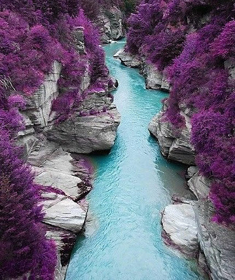
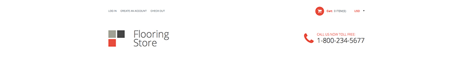

Welcome to Chris Fortin's Page
About me
Hi, my name is Christopher Fortin. Young, inspiring, energetic, outgoing, those are the words I used to describe myself. I am 19 years old. I am from Burlington Vermont, Home of the Ben and Jerrys Ice Cream and world famous Vermont Maple Syrup.
I was born in between mountains and raised in a valley. I grew up around technology all my life; my family was always about in with the new out with the old. I believe the web industry is the same way; every single day new things become obsolete. I believe that the World Wide Web can become anything we want it to. I want to become the one that sculpts the web into the applications we use every day to make our lives easier.
With this drive I joined a web development class in high school where I learned all about HTML and CSS. This led me to Full Sail University where I currently attend to become a better developer. I am on the path to my goals and nothing will stop me from reaching them.
Component 1. Header

Target Audience:
The target audience for this website would be adults around the age of 20-40 looking for a well-organized service to help them with their problem.
Client/User Needs:
The users may also want to call strait away so the phone number is located in the top right comer where the user would look right away. Or if the user needed to find the location, it is located right smack dab in the middle. You get quick information with no effort on the user.
Critique:
The red bar located on the top of the page is supposed to draw your attention to it. The white easy to read text has good contrast so you can read with little effort. The way this website puts all the information vital to a website right on top of the header works for this website and is a good design strategy for quick information.
Component 2. Header_1
Target Audience:
The target audience that is being targeted for this header section would be men and woman who are between the ages on 20-50 looking for someone to help them with flooring a house. Based on the fact there is a login button the users would be able to long in and have an account. This aims at younger audiences because the owner of the site wants people to interact on his website.
Client/User Needs:
The needs of the user for this website would be someone looking for a flooring service. The user would be looking for someone they can call to come out to their house and put flooring in a house or apartment. The fact that the header is clean and efficient gives the user quick information that doesn’t put any strain on the user.
Critique:
This website header is very efficient and organized. The bright red color draws your eye to the most important sections of this site. However the extremely small font size and gray color used for the login and check out buttons really doesn’t do anything to add to the design. These links would be hard to see and people may not realize these are links and never click on them.
Component 3. CTA
Target Audience:
The target audience for this CTA would have to be men and woman around the ages of 20-50 who have a porch or need a service where they need to get in contact with the owners of the website.
Client/User Needs:
The client who came to this website and saw this CTA would most likely click on this CTA if they needed to find the social media for the owners of the website. They also may need to click on the tabs to look at the other photos for further information.
Critique:
The dark background and shadowy feel you get from the photo is supposed to give off a clean simple quality deck that you can trust to be provided to you. I like the font of this mostly because it has sharp serifs at the end of the words. The arrow button is displaying how many pictures are in the rotation so you don’t get confused when the picture scrolls through the other pictures.
Component 4. CTA_1

Target Audience:
The target audience for this website would have to be females between the ages of 15-40 looking to get skin care products or some sort of product that would make you look younger or more beautiful.
Client/User Needs:
If a user came to this site and saw this CTA they would want to click on it only if they where interested in what was being portrayed. This means that the user would have to be connected to the product on an emotional level so they would want to learn more or shop now in this case.
Critique:
The green on green works really well for this website. Also, the white sidebar on the sides of the CTA is the background color of the main wrap around the page. This gives off good contrast and gives the impression of the CTA coming off the page making it more noticeable.
Component 5. Welcome/About
Target Audience:
It is hard to describe the target audience for this section of this website. But they would have to be males and females who are searching for a service or product that this website would offer. Upper to middle class Americans looing for a good quality service.
Client/User Needs:
The needs of the user for this website would be someone looking for a service that they can trust, the user would want to go to this website and location because this is a clean easy to read welcome note for the user, something pleasant to read
Critique:
The way the red text grabs your attention and kind of leads your eyes on the next paragraph works well with this design. The font size and spacing in between the lines are well spaced and work well with the font that is chosen. The welcome header text is bigger and stands out so you instinctively read it first.
Component 6. About_1
Target Audience:
The target audience for this website would be homeowners between the age of 40-60 who are looking to upgrade or add on to their homes. Because of the small font the target audience would be younger people because the gray on white font color would be hard to read if your eyes are not perfect.
Client/User Needs:
The user would want to get some sort of information out of this web section. They would want to know more about the owners of the website. Or the user would want to know more about the company as a whole so they could come here to this page to learn quick information about the company. And if they would like they can click on the read more tabs to learn more.
Critique:
This website does a great job of giving just enough information but no so much where you get sick of reading. The pictures of this site really work well with the shadows that are there to make it look 3D. The faint lines under Hello there! And About us really brings the site together. I like how faint the read more tabs are where they don’t really stand out but again they draw your attention to it.
Component 7. Team
Target Audience:
The target audience for this website would be men and woman between the ages of 30-60 looking to hire a skilled team of construction workers who can be trusted to do a good job. Because of the loose feel this site gives off the owner of the site was trying to give of a flexible feel saying that they can do almost any kind of job you have in mind.
Client/User Needs:
If someone came to this part of this website they would be looking for some information on what this company does and who is involved in this company. The way the circles give a visual reference to what’s written helps the user see what is said there without really reading the text. This site is really nice to glance over and see the structure that is there. No doubt on purpose because of the nature of the company who owns this website.
Critique:
The short red line separates the header text from the body text giving a nice gap that doesn’t confuse the reader. This site also portrays to people who don’t necessarily like to read though a site. The photos are catchy and hold your attention giving this site a sense of life and structure. The way the “our team” section is laid out really gives the impression that these people are professionals who know what they are doing. Which in turn gives you the impression you can trust them.
Component 8. Contact
Target Audience:
The target audience for this website would be design friendly people who have a eye for design because from what I can tell from this website it is an exterior design site. Because the font is so easy to read the target audience would be 20-70 year old men and woman who are looking to spend money on exterior design for their house
Client/User Needs:
If a user came to this section of the website then they would get information on phone numbers, emails, an address and social media links. If the user needs to know any of that information this section of the site offers clean efficient solutions to giving you this information.
Critique:
The font for the headers of this website really stands out, along with the red social links and the arrow. These are the first things I see when I see this section of the website. The fact everything is aligned in 4 columns gives an impression of foundation that makes the site feel organized. The red arrow in the bottom right corner draws your eye to it as it should because it is your quick escape back to the top of the page.
Component 9. Tab Section
Target Audience:
The target audience for this website would have to be people who are used to the apple style for websites. This website gives the same feel as the apple store which makes it really easy to navigate. The users who should use this site would be people from 15-40 who don’t like reading a lot and prefer catchy images.
Client/User Needs:
If someone came to this section of my website and saw this I would assume that they want to view videos, photos or previous works. If the user wanted to know the story behind the website they would come to this part of the site to watch videos and look at pictures. This is the heart of the site where the user can get most of the information that is offered on this website.
Critique:
The gray and white tabs indicating what section you're in is super clean and works for this website. The shadows on the tabs and the changing of colors works for what the user would try to do. Also the fact of how many words are used to communicate this section of the website keeps it clean and simple to read.
Component 10. Latest News

Target Audience:
The target audience for this website would be men and woman between the ages of 20-50 looking for a service that they can trust and has experience with what they provide. This orange font and see all link colors really grab your attention so your eyes get pulled strait to this section.
Client/User Needs:
If the user came to this section of this website they would be looking for the latest news of what the company was up to. This is a great way to stay connected to find the best deals. There is plenty of reason why the user would come here but if the service was offering some kind of discount or opportunity it would be displayed here in latest news.
Critique:
The bold headers are the first thing you see when you get to this section, then the colors of the pictures and how they relate to the orange sub headers and blue "see all" links. All these things are in a relationship with each other because they are all so close together. The way the body font fits in with this section works really well if you wanted to read it all or none of it. It kind of just blends in which is good
Component 11. Blog

Target Audience:
The target audience for this blog would be technically inclined people who know what this site is about and how it functions. People who have accounts with this site or visit often would recognize the views and comments, who posted it and when. All these things target a specific audience that is interested in learning more about the topics being discussed in this blog.
Client/User Needs:
The main goal of this section of the website would be in allow the people coming to this site a chance to interact and talk about things on this site. The user would be able to read more about this blog section or even login and save it. If the user wanted to see what other people have to say about other topics all they have to do is click on the green blog word bringing them to the actual blog page.
Critique:
The light color of this background and the light text gives good contrast where you can read it with little effort. Also the large green boxes draw your attention to them which is the point because this is where you would go to interact further with this website. The green and white and gray work really well together on this website, giving the sense of efficient information that you can get quickly and easily.
Component 12. Map
Target Audience:
This map section of a website really grabs your attention with the large full width map. This says that the people who would view this site would not necessarily have the best eyesight. However the fact that there is a download information with vCard gives the impression that they are targeting a younger audience. Along with the sleek look of the text, this gives the idea that the target audience is teenagers and young adults that have a background in technology.
Client/User Needs:
The user needs for this website would be to find information on where this company is located. Along with the contact information of the company and the send a message section to the company.
Critique:
The wide format that is being used here really helps organize all the information here without overwhelming you with content. However the miscellaneous information section does make this layout seem a bit crowded.
Component 13. Footer

Target Audience:
The target Audience for this footer section of this website would have to be people, male and female, between the ages of 15-50 because of the simplicity of the design. The navigation in the footer helps the user find where they is with out confusing the user.
Client/User Needs:
If the user came down to the footer section of the website they would be looking for A. the navigation or B. the person who made the site. This footer section does both of these very well giving plenty of space between the words and information so you can read everything very easily.
Critique:
This footer for any website would work because it offers the basic functions a footer should offer. However when this site would be resized down to responsive the owner of the site would have to make a choice to keep the navigation in the footer or just get rid of it all together. If it where to stay if might get to crowed for the user to understand what the point of the navigation in the footer is in the first place.